If you don't want to print now,
There are many situations in which we do not know precisely what will happen. Even when the mechanism underlying the situation is deterministic, limited knowledge means that there is no choice but to treat the outcome as being random.
Uncertainty is described by the probabilities of the different possible events that might occur. Probability is a value that describes chance on a scale of zero to one.
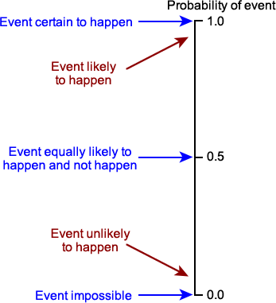
Although there are many different situations involving randomness, it is convenient to use a general terminology that can cover them all.
Definition
Links to set theory
These definitions are closely associated with set theory. Although the ideas behind probability can be understood without it, a formal definition of probability and its rules uses set theory. The following table links probability notation with set theory:
| Probability notation | Set theory notation |
|---|---|
| Sample space, S | Universal set |
| Outcome | Element |
| Event, E | Subset |
Set operations
In set theory, unions and intersections of sets are basic operations. These operations also correspond to meaningful ways to define events from others. Consider two events A and B.
| Probability notation | Set theory notation | Interpretation |
|---|---|---|
| A or B | A ∪ B | Either A or B (or both) occurs |
| A and B | A ∩ B | Both A and B occur |
| not A | Ac | Event A does not occur |
Equally likely outcomes
There are some kinds of experiment where we believe that all possible outcomes have the same chance of arising. This is usually justified by symmetry in the physical mechanism underlying the experiment. For example,
Definition
If an experiment has \(N\) equally likely outcomes and an event, \(E\), consists of \(x\) of them, then its probability is defined to be
\[P(E) = \frac x N\]In other words,
\[P(event) = \frac {\text{Number of outcomes in } event} {\text{Number of outcomes in sample space}}\]This is called the classical definition of probability and is the easiest to understand.
Sampling a value from a finite population
Many applications with equally likely outcomes involve games of chance such as cards, dice and roulette wheels.
However equally likely outcomes also arise when sampling a value from a finite population. If all population members have the same chance of selection, then this definition of probability can again be used.
Household size in Mauritius
The following bar chart describes the size of all households in Mauritius in its 2011 census.
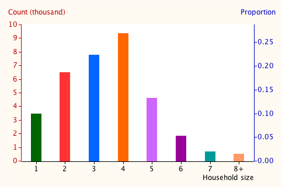
The probability that a randomly chosen household is of any size is the proportion of such households in the census.
If all outcomes are equally likely, calculating the probabilities of events involves counting outcomes — both counting the outcomes in the event itself and those in the sample space. The following result is often useful.
Mathematical result (should be known from maths)
The number of ways to choose x items from a population of n items when the order of choosing them is unimportant is
\[ {n \choose x} \;=\; \frac {n!} {x!\;(n-x)! } \](Proved in full version)
The following question can be answered by outcomes.
Question
If five cards are dealt at random from a pack of 52, what is the probability that all five cards are of the same suit?
(Solved in full version)
Repeatable experiments
In practice, experiments rarely have outcomes that we can argue must be equally likely. In any such experiment, a different definition must be used for the probability of an event.
We can often imagine repeating the experiment many times. If the experiment is repeated indefinitely in essentially the same way, the probability of an event can be defined as the long-term proportion of times that it occurs.
Definition
If an experiment could be repeated in essentially the same way again and again, then the probability of any event, \(E\), is defined to be the limiting proportion of times that the event occurs as the number of repetitions increases.
\[P(E) = \lim_{\text {repetitions} \to \infty} (\text {proportion of times } E \text { occurs})\]The next diagram illustrates.
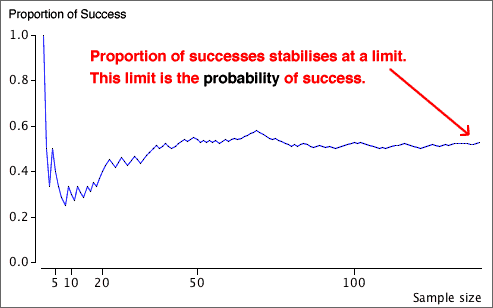
Consistency with earlier definition
A theorem called the Law of Large Numbers proves that this definition is consistent with the definition that we gave earlier for experiments with equally likely outcomes. If the probability of an event is \(p\) (using the classical definition) and the experiment is repeated indefinitely, the limiting proportion of times that the event occurs is always \(p\).
The probability of an event can be defined as the long-term proportion of times that it occurs when the experiment is repeated. Unfortunately, although this explains the concept of the event's probability, it does not provide a numerical value in practice — the experiment cannot be repeated an infinite number of times.
However although we cannot repeat the experiment an infinite number of times, the proportion of times that the event occurs in a large number of repetitions will give an approximate value for the probability — an estimate of its value.
Survival of silkworm larvae
From the following data set, estimate the probability that a silkworm will survive at least 300 seconds.
| 270 254 293 244 293 261 285 330 284 274 |
307 235 215 292 309 267 275 298 241 254 |
256 275 226 287 280 339 294 298 283 366 |
300 310 280 240 291 286 230 285 218 279 |
280 286 345 289 210 282 260 228 243 259 |
285 275 280 296 283 248 314 258 215 299 |
240 241 236 255 267 271 253 271 233 260 |
273 233 271 267 258 319 310 302 260 251 |
(Solved in full version)
Unrepeatable experiments
In most scientific contexts, it is possible to imagine repeating an experiment in essentially the same way. However there are other scenarios in which such repetitions are clearly impossible, but there is still uncertainty about the outcome. For example,
There are no equally likely outcomes and the "experiment" cannot be repeated. Instead, a subjective or personal assessment of probability must be made.
Subjective probability
Subjective probability can be given a formal definition, based on what you would regard as a 'fair bet' for the event. If either of the earlier definitions of its probability can be used, this results in the same numerical value, provided it is applied by a 'reasonable' person with full knowledge of the experiment's structure.
Bayesian statistics
A whole field of statistics called Bayesian statistics is based on subjective probabilities and is gaining in importance
However we will neither deal with subjective probability nor Bayesian statistics further in this e-book.
Mutually exclusive events
Definition
Two events, \(A\) and \(B\) are called mutually exclusive if they have no outcomes in common. More precisely, using set notation, this is when
\[ A \cap B = \emptyset \]In other words, \(A\) and \(B\) are called mutually exclusive if they cannot occur at the same time.
Properties of probability
In 1933, Kolmogorov published a paper basing the 'theory' of probability to a small number of axioms that hold for all definitions of probability. Anything derived from these axioms also holds, no matter how probability is defined, so we no longer need to distinguish between the different definitions in the last section.
Axioms of probability
These axioms are central to probability. The rest of probability theory can be derived from them.
The following can be proved using only set theory and the three axioms of probability.
Probability of an event not happening
P(not A) = 1 − P(A)
Probability that one of two events happens
For any two events, A and B
P(A or B) = P(A) + P(B) − P(A and B)
(Both proved in full version)
Note that the second result applies to events that may not be mutually exclusive.
Illustration with Venn diagrams
Many results can also be explained using Venn diagrams that represent the whole sample space by a rectangle and events by shapes drawn in it.
Formulae involving addition and subtraction of probabilities correspond to the same formulae about areas in the Venn diagram. For example, the two results above correspond to:
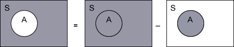
and
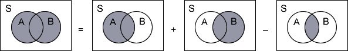
We have not included the solutions to the following examples in the summary pages.
Question
Consider a raffle of 100 tickets in which Anne Brown bought seven tickets. Tony Ng also bought four of these 100 tickets. What is the probability that either Anne or Tony win?
(Solved in full version)
The next example is based on a real data set.
Question
The following contingency table describes all 121,690 couples who were married in Australia in 2011.
| Previous marital status of couple | Both partners born in Australia |
Both partners born in same overseas country |
Born partners in different countries |
|---|---|---|---|
| First marriage both partners | 51,663 | 10,522 | 24,630 |
| First marriage one partner | 9,450 | 2,910 | 8,050 |
| Remarriage both partners | 6,769 | 1,889 | 5,807 |
In a randomly selected marriage from 2011, what is the probability that either it was the first marriage of both partners or that both partners were born in Australia?
(Solved in full version)
Sometimes we are interested in situations where we have partial knowledge about the outcome of an experiment. Information from this partial knowledge is expressed via conditional probability.
Definition
The conditional probability that an event \(A\) occurs, given that \(B\) is known to have occurred is
\[ P(A \mid B) = \frac {P(A \textbf { and } B)} {P(B)} \]If the events \(A\) and \(B\) correspond to categories of two categorical variables and the probabilities for the possible combinations of the variables' values are laid out in a table (i.e. their joint probabilities), the conditional probabilities correspond to scaling rows or columns of the table to sum to one.
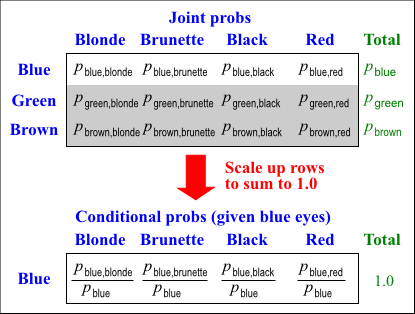
Two sets of conditional probabilities
Note that there is an equivalent formula for conditional probability of \(B\) given that \(A\) has occurred.
\[ P(B \mid A) = \frac {P(A \textbf { and } B)} {P(A)} \]You should be careful to distinguish between \(P(A \mid B)\) and \(P(B \mid A)\). They have different interpretations and usually also have different values.
The probability of being pregnant, given that a randomly selected person is female would be fairly small. The probability of being female, given that a person is pregnant is 1.0 !!
The definitions of the conditional probabilities \(P(A \mid B)\) and \(P(B \mid A)\) can be rewritten as
\[ P(A \textbf { and } B) \;=\; P(A \mid B) \times P(B) \;=\; P(B \mid A) \times P(A) \]\(P(A)\) and \(P(B)\) are called marginal probabilities for A and B, whereas \(P(A \textbf { and } B)\) is called their joint probability.
Proportional Venn diagram
The marginal and conditional probabilities can be displayed graphically with a Venn diagram in which one margin is partitioned using the marginal probabilities for \(A\) and the slices are split using the conditional probabilities for \(B\) given \(A\).
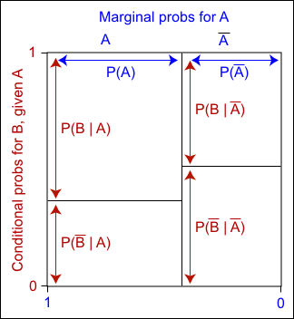
Since each area is the product of a marginal probability and the corresponding conditional probability,
The area of any rectangle in the diagram equals the joint probability of the row and column events.
Alternatively, the unit square can be split into horizontal strips using the marginal probabilities for \(B\), then vertically using the conditional probabilities for \(A\) given \(B\). The areas of the resulting rectangles are again equal to the joint probabilities, so the two diagrams are just rearrangements of the same areas.
Definition
A collection of events, \(A_1, A_2, \dots, A_k\), is called a partition of the sample space if the events are mutually exclusive and their union is the complete sample space,
\[ A_1 \cup A_2 \cup ... \cup A_k = S \]\(A\) and \(\overline{A}\) are the simplest kind of partition of the sample space.
From the axioms of probability, it can be proved that
\[ P(A_1) + P(A_2) + ... + P(A_k) = 1 \]Proportional Venn diagrams
If there are two partitions of the sample space, Proportional Venn diagrams can be used to show the marginal probabilities for one partition and the conditional probabilities for the other.
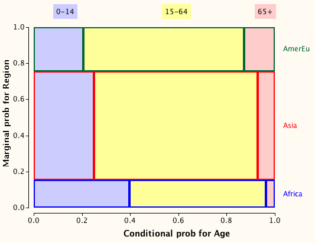
The joint probability for any combination of row and column values is the area of the corresponding rectangle.
Two categorical variables (or partitions of the sample space) are sometimes represented in a tree diagram. The main branches of the tree correspond to the possible values for the first of these variables. At the end of each of these branches, further branches are drawn for each possible value of the second variable.
The main branches are usually labelled with their marginal probabilities. The branches to the right are labelled with their conditional probabilities, conditional on the branches to the left leading to that fork.
Evaluating joint probabilities
Joint probabilities can be found by multiplying the probabilities down branches. This corresponds to the general multiplication rule,
\[ P(A \textbf { and } B) \;=\; P(A) \times P(B \mid A) \]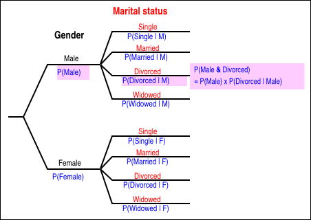
Sampling without replacement
Tree diagrams are more useful for problems in which there is a natural ordering of the two measurements.
An important example of this is when two or more items are selected from a finite population without replacement — in other words, when the same item cannot be selected more than once. The probabilities for the second item chosen depend on which item was chosen first.
The tree diagram below relates to the sex of two students chosen from a class of 2 women and 4 men.
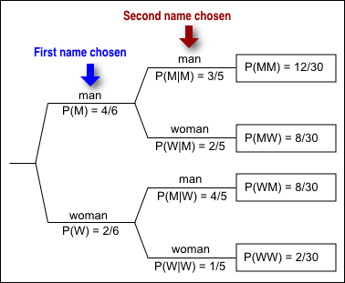
Tree diagrams can be used for any situation involving a sequence of events. Each possible sequence of events is represented by a path through the tree diagram. Branches are labelled with the probability for the branching conditional on the branches to the left.
For example, if a family want at least two children and no more than four, but will stop when they get a boy, the possible sequences of events are:
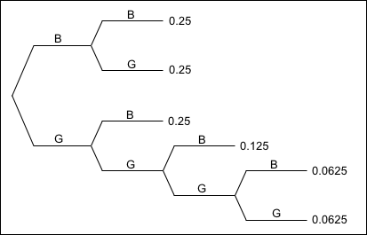
The joint probability for any sequence of events is again found by multiplying the probabilities on all branches of the tree corresponding to this sequence. If the probability of each child being a boy is \(\frac 1 2\), then the probabilities for the possible sequences of boys and girls are as shown in the diagram.
Two events are called independent if knowledge that one event has happened does not provide any information about whether or not the other has also happened. The formal definition is:
Definition
Two events A and B are called independent if
\[ P(A \textbf{ and } B) = P(A) \times P(B) \]The table below shows the joint probabilities in an artificial examples about school children.
| Mathematical performance | ||||
|---|---|---|---|---|
| Poor | Satisfactory | Above average | Marginal | |
| Underweight | 0.0225 | 0.1125 | 0.0150 | 0.1500 |
| Normal | 0.0825 | 0.4125 | 0.0550 | 0.5500 |
| Overweight | 0.0300 | 0.1500 | 0.0200 | 0.2000 |
| Obese | 0.0150 | 0.0750 | 0.0100 | 0.1000 |
| Marginal | 0.1500 | 0.7500 | 0.1000 | 1.0000 |
The mathematical performance categories are independent of the weight categories since
\[ P(Underweight \textbf{ and } Above \text{ } average) = P(Underweight) \times P(Above \text{ } average) \]and similarly for the other performance and weight categories. All this can be summarised by saying
Weight and mathematical performance are independent
Independence and conditional probabilities
Since \(P(A \textbf{ and } B) = P(A \mid B) \times P(B) \) from the definition of conditional probability, if two events are independent,
\[ P(A \mid B) = P(A) \]and similarly
\[ P(B \mid A) = P(B) \]Independence means that knowledge that one event has happened provides no information about whether the other has also happened.
This can be seen in the following conditional probabilities for performance, given weight,
| Mathematical performance | ||||
|---|---|---|---|---|
| Poor | Satisfactory | Above average | Total | |
| Underweight | 0.15 | 0.75 | 0.10 | 1.0 |
| Normal | 0.15 | 0.75 | 0.10 | 1.0 |
| Overweight | 0.15 | 0.75 | 0.10 | 1.0 |
| Obese | 0.15 | 0.75 | 0.10 | 1.0 |
Independence is also evident in the conditional Venn diagram on the left below, but not for the variables on the right.
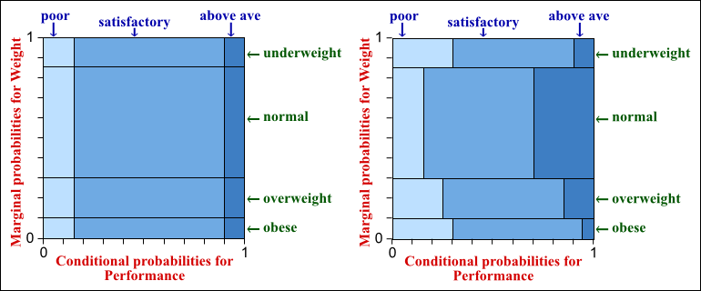
Sometimes we only know the conditional probabilities of an event \(A\), given that each of another collection of events \(\{B_1, ..., B_k\} \) have occurred. If we also know the probabilities of the B-events, it is possible to calculate the unconditional (i.e. marginal) probability for \(A\).
Law of total probability
If \(\{B_1, ..., B_k\} \) are a partition of the sample space,
\[ P(A) = \sum_{i=1}^{k} {P(A \mid B_i) \times P(B_i)} \](Proved in full version)
The following example illustrates this.
Question
The following table was derived from reports about contraceptive use in the USA among women aged 15 to 44 who were sexually active but not intending to get pregnant. It also shows the percentages of these women who had unintended pregnancies in their first year using each method.
| Main method | % of women | % unintended pregnant |
|---|---|---|
| No method | 37.8% | 85% |
| Pill | 17.1% | 9% |
| Female sterilization | 16.5% | 0.5% |
| Male sterilization | 6.2% | 0.15% |
| Male condom | 10.2% | 18% |
| IUD | 3.5% | 0.5% |
| Withdrawal | 3.2% | 22% |
| Injectable | 2.4% | 0.3% |
| Vaginal ring | 1.3% | 9% |
| Fertility awareness methods | 0.7% | 24% |
| Patch | 0.5% | 9% |
| Implant | 0.3% | 0.05% |
| Other methods | 0.3% | 10% |
What is the probability that a random American woman in this age group who is sexually active but not intending to get pregnant will actually get pregnant?
(Solved in full version)
Consider two partitions of the sample space, \(\{A_i, i=1,\dots, k\}\) and \(\{B, \overline{B}\}\). The probabilities for all possible events can be described in three different ways:
We have already shown how to find marginal and conditional probabilities from the joint probabilities, and how to find joint probabilities from marginal and conditional ones. The following theorem gives a formula that helps find one set of conditional probabilities from the other.
Bayes Theorem
If \(\{A_1, ..., A_k\} \) is a partition of the sample space,
\[ P(A_j \mid B) = \frac {P(A_j) \times P(B \mid A_j) } {\sum_{i=1}^{k} {P(A_i) \times P(B \mid A_i) } } \](Proved in full version)
In actual examples, it is usually easiest to work out the probability from first principles:
\[ P(A_j \mid B) = \frac {P(B \textbf{ and } A_j) } {P(B) } \]The numerator can be found from the definition of conditional probability
\[ P(A_j \mid B) = \frac {P(B \textbf{ and } A_j) } {P(B) } \]and the denominator can be evaluated using the law of total probability.
Example
Medical diagnostic tests for a disease are rarely 100% accurate. There are two types of error:
Consider a diagnostic test with conditional probabilities
\[ P(negative \mid disease) = 0.05 \quad\quad\quad P(positive \mid no \text{ } disease) = 0.10 \]If 10% of people who are given the test have the disease,
\[ P(disease) = 0.10 \]what is the probability that someone with a positive test result actually has the disease?
(Solved in full version)
What you need to know in this chapter
You should concentrate on the following material when studying the chapter about probability.
1.1 Probability
The formal terminology for talking about randomness in page 1.1.2 is important to learn. You should also be able to work out probabilities relating to experiments with equally-likely outcome (page 1.1.4). The rest of this section is background information and will not be examined.
1.2 Probability calculations
This short chapter is important. You should know the three main axioms of probability (1.2.1), be able to use these axioms, along with set theory, to prove other results about probability (1.2.2) and apply the axioms to real-life examples (1.2.3).
1.3 Conditional probability
The concept and definition of conditional probability (1.3.1) and independence (1.3.6) are important. However you will not need to use Proportional Venn diagrams — they help to explain some results in this section but will not be examined. You should also understand the idea of partitions of the sample space (1.3.3).
When the randomness of a situation is described with conditional probabilities, you should be able to graph these in a tree diagram and use the tree diagram to work out other probabilities (1.3.4-5).
You should be able to apply the law of total probability (1.3.6) and Bayes theorem (1.3.7) to work out probabilities, but will not be asked to prove these two theorems. You may find it easier to answer questions involving these theorems from first principles rather than the theorems' formulae.